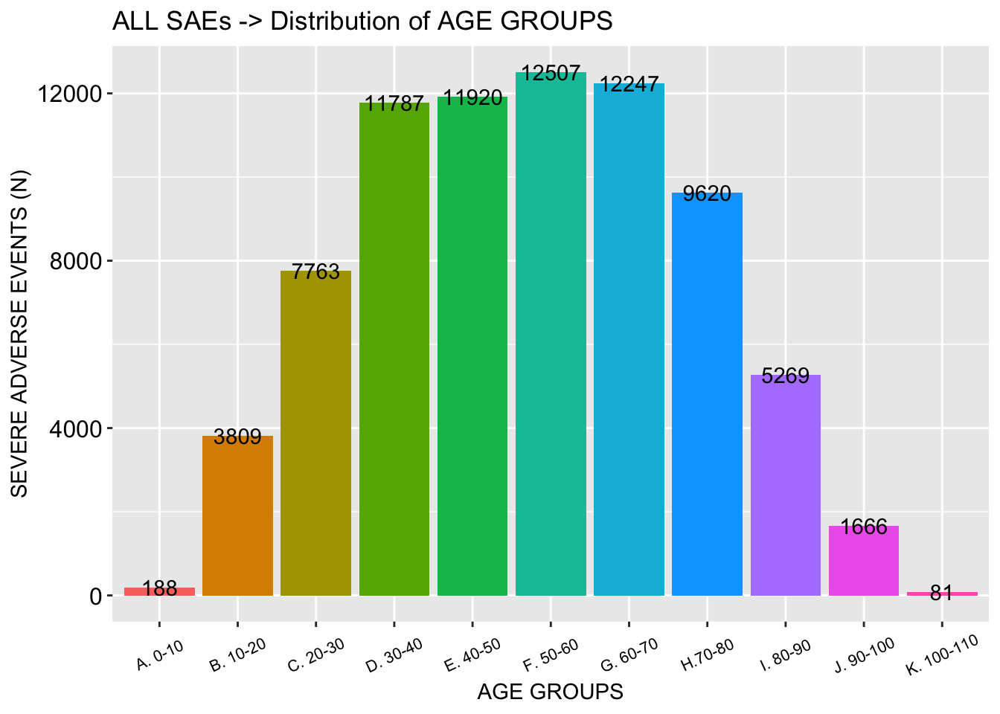
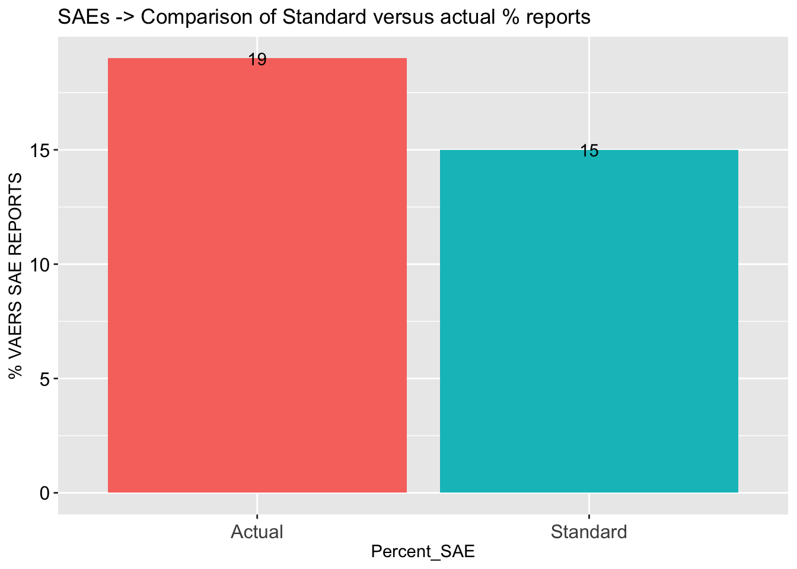
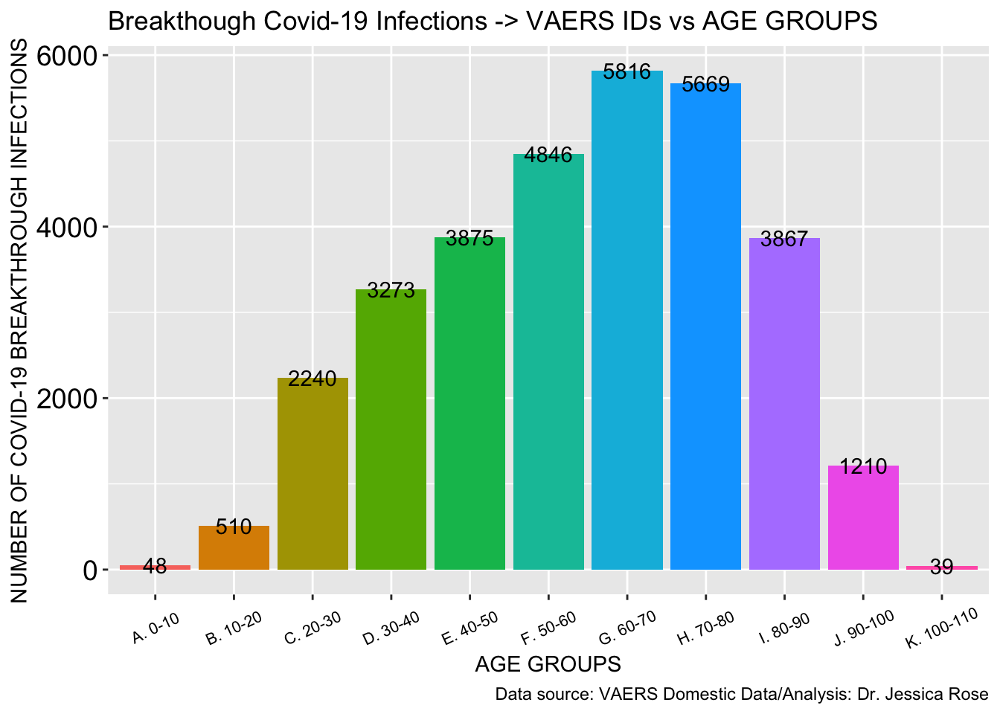

This is an R Markdown sheet generated from the VAERS data. I included some code but for the most part, only figures are shown. I decided to show figures pertaining to Death, Spontaneous abortions, Breakthrough COVID-19 infections and Cardiovascular, Neurological and Immunological adverse events.
I start by coalescing the .csv files downloaded from the VAERS website: https://vaers.hhs.gov/data/datasets.html
## [1] 388900
## AGE_YRS n skew
## 1 0.00 1 1.524048
## 2 0.08 20 1.524048
## 3 0.17 39 1.524048
## 4 0.25 11 1.524048
## 5 0.33 26 1.524048
## 6 0.42 7 1.524048
## 7 0.50 19 1.524048
## 8 0.58 14 1.524048
## 9 0.67 5 1.524048
## 10 0.75 11 1.524048
## 11 0.83 3 1.524048
## 12 0.92 6 1.524048
## 13 1.00 47 1.524048
## 14 1.08 28 1.524048
## 15 1.17 3 1.524048
## 16 1.25 15 1.524048
## 17 1.33 5 1.524048
## 18 1.42 3 1.524048
## 19 1.50 10 1.524048
## 20 1.58 2 1.524048
## 21 1.75 1 1.524048
## 22 1.83 3 1.524048
## 23 1.92 3 1.524048
## 24 2.00 17 1.524048
## 25 2.17 1 1.524048
## 26 2.50 1 1.524048
## 27 3.00 18 1.524048
## 28 4.00 40 1.524048
## 29 4.17 1 1.524048
## 30 4.33 1 1.524048
## 31 4.42 1 1.524048
## 32 4.58 1 1.524048
## 33 5.00 16 1.524048
## 34 5.25 1 1.524048
## 35 5.33 1 1.524048
## 36 5.50 1 1.524048
## 37 5.92 3 1.524048
## 38 6.00 11 1.524048
## 39 7.00 18 1.524048
## 40 8.00 14 1.524048
## 41 9.00 10 1.524048
## 42 10.00 33 1.524048
## 43 11.00 289 1.524048
## 44 12.00 826 1.524048
## 45 13.00 1012 1.524048
## 46 14.00 1215 1.524048
## 47 15.00 1755 1.524048
## 48 16.00 3189 1.524048
## 49 17.00 4343 1.524048
## 50 18.00 2488 1.524048
## 51 19.00 2696 1.524048
## 52 20.00 2873 1.524048
## 53 21.00 3175 1.524048
## 54 22.00 3508 1.524048
## 55 23.00 3787 1.524048
## 56 24.00 4116 1.524048
## 57 25.00 4387 1.524048
## 58 26.00 4696 1.524048
## 59 27.00 4882 1.524048
## 60 28.00 5144 1.524048
## 61 29.00 5402 1.524048
## 62 30.00 5803 1.524048
## 63 31.00 6000 1.524048
## 64 32.00 6191 1.524048
## 65 33.00 6246 1.524048
## 66 34.00 6424 1.524048
## 67 35.00 6468 1.524048
## 68 36.00 6512 1.524048
## 69 37.00 6756 1.524048
## 70 38.00 6783 1.524048
## 71 39.00 6757 1.524048
## 72 40.00 6723 1.524048
## 73 41.00 6739 1.524048
## 74 42.00 6428 1.524048
## 75 43.00 6473 1.524048
## 76 44.00 6127 1.524048
## 77 45.00 6285 1.524048
## 78 46.00 6278 1.524048
## 79 47.00 6003 1.524048
## 80 48.00 6289 1.524048
## 81 49.00 6607 1.524048
## 82 50.00 7195 1.524048
## 83 51.00 6660 1.524048
## 84 52.00 6387 1.524048
## 85 53.00 6205 1.524048
## 86 54.00 6171 1.524048
## 87 55.00 6229 1.524048
## 88 56.00 6550 1.524048
## 89 57.00 6499 1.524048
## 90 58.00 6599 1.524048
## 91 59.00 6530 1.524048
## 92 60.00 6642 1.524048
## 93 61.00 6340 1.524048
## 94 62.00 6090 1.524048
## 95 63.00 6118 1.524048
## 96 64.00 5860 1.524048
## 97 65.00 6751 1.524048
## 98 66.00 6276 1.524048
## 99 67.00 5979 1.524048
## 100 68.00 5787 1.524048
## 101 69.00 5337 1.524048
## 102 70.00 5228 1.524048
## 103 71.00 4984 1.524048
## 104 72.00 4575 1.524048
## 105 73.00 4485 1.524048
## 106 74.00 4159 1.524048
## 107 75.00 3312 1.524048
## 108 76.00 3043 1.524048
## 109 77.00 2933 1.524048
## 110 78.00 2822 1.524048
## 111 79.00 2314 1.524048
## 112 80.00 2022 1.524048
## 113 81.00 1713 1.524048
## 114 82.00 1684 1.524048
## 115 83.00 1508 1.524048
## 116 84.00 1295 1.524048
## 117 85.00 1141 1.524048
## 118 86.00 1069 1.524048
## 119 87.00 945 1.524048
## 120 88.00 813 1.524048
## 121 89.00 738 1.524048
## 122 90.00 672 1.524048
## 123 91.00 540 1.524048
## 124 92.00 461 1.524048
## 125 93.00 396 1.524048
## 126 94.00 330 1.524048
## 127 95.00 257 1.524048
## 128 96.00 190 1.524048
## 129 97.00 149 1.524048
## 130 98.00 91 1.524048
## 131 99.00 61 1.524048
## 132 100.00 55 1.524048
## 133 101.00 35 1.524048
## 134 102.00 17 1.524048
## 135 103.00 16 1.524048
## 136 104.00 4 1.524048
## 137 105.00 6 1.524048
## 138 106.00 2 1.524048
## 139 113.00 1 1.524048
## 140 115.00 5 1.524048
## 141 119.00 2 1.524048## # A tibble: 2 x 2
## # Groups: VAX_DOSE_SERIES [2]
## VAX_DOSE_SERIES n
## <chr> <int>
## 1 1 206282
## 2 2 113020## # A tibble: 2 x 4
## # Groups: VAX_DOSE_SERIES [2]
## VAX_DOSE_SERIES n SUM PERCENT
## <chr> <int> <int> <dbl>
## 1 1 206282 319302 64.6
## 2 2 113020 319302 35.4## [1] 5163## [1] 22612## [1] 52399## [1] 66769## [1] 17.16868BAR PLOT FOR SAE COMPARISON TO STANDARD
## Percent_SAE SAE PERC
## 1 Standard 58000 15
## 2 Actual 66769 17 BREAKTHROUGH COVID19 CASES
BREAKTHROUGH COVID19 CASES
## [1] 9442
## [1] 5351


 





## [1] 14828
 ```
```